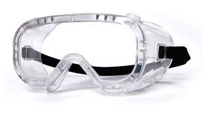
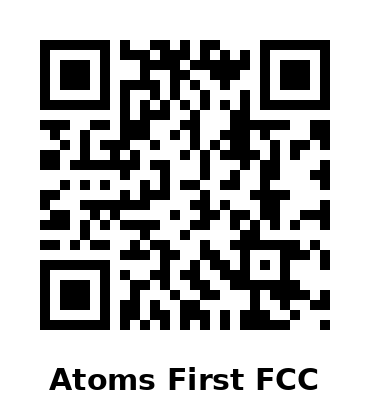
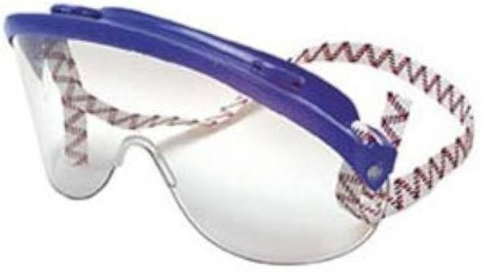

Grade Map
Your grade, your map 🗺
Click a slice of the pie to jump to everything about that part of your grade. The center takes you to the grade overview and the math behind it.
The big red slice is the message: completing Objectives is 65% of your grade — and every Objective stays winnable through its close date, no matter how attempt one goes.
How This Course Works
A mastery course, in one paragraph
The semester is organized into ten Objectives — ten sets of chemistry skills you master one at a time. You complete an Objective by scoring 32/40 (80%) on its Skill Check, taken at the start of your lab period. Your grade: Objectives 65% · Lab 15% · ACS Final 15% · Decay Practice 5%. Retakes are unlimited (one per day, earned through the ticket ladder). No single bad day defines your grade.
One thing to know up front: your first attempt at Skill Check 1 will probably feel hard. That's by design — attempt 1 is a diagnostic, not a verdict. The whole system is built around what you do next.
Your first week, step by step
- Be at your 8:00 AM lab — Mon Aug 10 (section 25825) or Wed Aug 12 (25826). Safety training is required before any experiment.
- Grab the Objective 1 Blueprint and read the contract page — it lists every skill Skill Check 1 can test. Nothing outside that pool appears.
- Do the reading and the 0-point reading check before lecture.
- Save Oct 9 · Nov 13 · Dec 4 in your phone. Skill Check 1 comes fast — Aug 17/19 — and it's built to show you how this course works.
The Objective Loop — Run It Ten Times
- Grab the Blueprint when it publishes (about a week before the Objective starts). The contract page lists every skill in the pool — nothing outside it appears on the Skill Check.
- Do the reading + the 0-point reading check before lecture. Lecture assumes first exposure, but readers move faster and retake less.
- Come to lecture and work the problems on your guided-notes print as we solve at the board. Board photos post to Canvas after every class.
- Work the Blueprint practice problems on your own schedule.
- Sit the Skill Check at 8:00 AM at the start of your lab period.
- 32/40 or better? Objective complete — start the next Blueprint. Not yet? Your annotated check comes back within ~2 days showing exactly which skills to fix. Pick your retake path and get back in before the batch close.
The Blueprint packet
Your roadmap for each Objective: the exact skill list, practice problems, and a synthesis section you complete by hand. Ungraded and never collected — unless you need it as your retake ticket for attempt 2.
Blueprints and notes are completed by hand because Skill Checks are handwritten — practicing in the same mode you're tested in. If you have a documented accommodation, an equivalent alternative is always available; talk to me or DSPS.
Work it before attempt 1
- Working the Blueprint before your first attempt is the single best predictor of passing.
- Keep it current even after a pass — the habits transfer to the next Objective.
- Heavy week coming? Blueprints publish early — start ahead and spread the load.
- Stuck? Find the section → define the terms → name your exact sticking point → attempt a partial solution → bring me a specific question.
Skill Checks & Retakes
Format & the rules
- One Skill Check per Objective, taken at the start of your lab period (8:00 AM).
- Hybrid format: 6 multiple-choice questions in Canvas on the lab computers (2 pts each) + 4 written problems worked by hand on an answer sheet (7 pts each — points for setup, execution, and the boxed answer).
- 40 points total · 32/40 (80%) = Complete. No partial credit — an Objective is Complete or it isn't yet.
- Phones are face-down on the desk during all Skill Check administrations and retakes.
- Skill Check content is fully taught by the week before you're tested.
- Batched closes: SC 1–4 → Fri Oct 9 · SC 5–7 → Fri Nov 13 · SC 8–10 → Fri Dec 4 (final backstop). No Skill Checks on practical days or during finals week.
Before, during, after
- Before: run the Objective Loop — the Blueprint practice core rehearses the exact skill pool.
- During: be seated by 8:00, phone down. Canvas for the multiple-choice, then the four written problems by hand. Show your setup and box your answer — most points live in setup and execution, so write what you know even when you can't finish.
- After a pass: next Blueprint. Not yet? An unpassed check is an obstacle, not a verdict — your annotated check (back in ~2 days) tells you exactly what to fix. Don't sit on it; the batch closes don't move.
| Skill Check | Objective | 25825 (Mon lab) | 25826 (Wed lab) |
|---|---|---|---|
| 1 | Foundations | Aug 17 | Aug 19 |
| 2 | Atomic Structure | Aug 31 | Sep 2 |
| 3 | Nuclear Chemistry | Sep 14 | Sep 16 |
| 4 | Chemical Language | Sep 28 | Sep 30 |
| 5 | Reactions & Redox | Oct 12 | Oct 14 |
| 6 | Stoichiometry | Oct 19 | Oct 21 |
| 7 | Thermochemistry | Oct 26 | Oct 28 |
| 8 | Structure & Phases | Nov 9 | Nov 4 |
| 9 | Gases & Solutions | Nov 16 | Nov 18 |
| 10 | Acids, Bases & Equilibrium | Nov 23 | Nov 25 |
The retake ladder — retakes are earned, not free
Unlimited retakes, maximum one per day. Every retake starts with a quick walk-through of your ticket ("show me your fix on #__").
Where retakes happen — three options
Decay Practice (5%)
Four at-home practice cycles
An at-home, untimed, unlimited-attempt Canvas practice set, four times during the semester, pulling from every Objective you've already been skill-checked on. Every attempt draws a fresh set of questions; your highest score counts; 80% or better = full credit for that cycle (1.25% each). Objective 10 has no cycle — the ACS Final covers it.
| Cycle | Opens | Due (Fri 11:59 PM) | Covers |
|---|---|---|---|
| 1 | Sep 7 | Sep 11 | Objectives 1–2 |
| 2 | Sep 28 | Oct 2 | Objectives 1–4 |
| 3 | Oct 26 | Oct 30 | Objectives 1–7 |
| 4 | Nov 16 | Nov 20 | Objectives 1–9 |
Free points that are also free review
- Take your first attempt cold the day the cycle opens — it's free, and it shows you exactly which old skills have slipped.
- Re-attempt until you clear 80 — fresh questions every time means early attempts are pure practice with zero downside.
- Don't wait for Friday. Nothing is accepted after the due date — bank your pass early.
- Old skills are exactly what the ACS Final draws from. Decay Practice is your final-exam insurance, four times over.
Your Grade
Components & letter grades
- 10 Objectives — 65% (6.5% each). Complete/Incomplete: 32/40 on the Skill Check completes it. A 79% and a 0% earn the same credit until you retake and pass — the cliff is deliberate, and it comes with unlimited retakes.
- Lab — 15%, plus a pass requirement: at least 8 of 11 experiments (each counts at ≥80%) + the lab practical. Your 15% is total lab points earned ÷ total lab points possible — every experiment and the practical pooled into one running percentage.
- ACS Final — 15%. Straight percentage — no minimum score required.
- Decay Practice — 5% (4 cycles × 1.25%, ≥80% best attempt each).
- Letter grades: A ≥90 · B ≥80 · C ≥70 · D ≥60 on your weighted total.
The strategy is persistence
- Complete all ten Objectives — that's the whole game. 10/10 keeps the A in reach; 8/10 caps you at 87; 7/10 at 80.5. The retake system means persistence gets you there.
- Bank all four Decay Practice cycles early — 5% for showing up to practice.
- Protect your lab count (see Lab).
- Then the ACS Final moves you within your band instead of deciding your fate.
- Unsure where you stand? Bring your gradebook to office hours — five minutes of arithmetic beats a semester of guessing. Do it before October 9.
Laboratory
The rules & safety
- Eleven experiments + the lab practical, in your lab block (Mon or Wed 8:00–10:50, NS 338).
- An experiment counts once you score 80% or better — the same 80% line as everything else in this course.
- Pass requirement: 8 of 11 experiments + the practical (week 17: Mon Nov 30 / Wed Dec 2).
- Safety is non-negotiable:
goggles📷

, knee-length white lab coat📷, closed shoes (no crocs or slides), hair tied back. Improperly dressed = you cannot do the experiment.
→ Full gear list, prices & where to buy: Required Materials - Miss the day's safety briefing and you sit out that experiment — a safety rule, not a punishment. Week 1 is required safety training.
Protect your standing
- Be in the room by 8:00 — the briefing opens the block, and Skill Checks run at the start of it.
- Keep your goggles and coat in your bag or car — never be the person sent home for shoes.
- Going to miss? Email me within 24 hours and claim a makeup window: week 4 (open flex — also the safety-training makeup for late adds), week 10 (mid-semester makeup), or week 14 (makeup/catch-up week, no new labs).
- Track your count. Three makeup windows exist — don't let two missed labs sit unrecovered past week 10.
Full lab schedule
| Wk | Mon / Wed | Lab |
|---|---|---|
| 1 | Aug 10 / 12 | Exp 0a — Lab Exploration + Safety Training (required) |
| 2 | Aug 17 / 19 | Exp 1a — Making Measurements |
| 3 | Aug 24 / 26 | Exp 2a — Atomic Mass |
| 4 | Aug 31 / Sep 2 | OPEN FLEX — late-add safety makeup |
| 5 | Sep 7 / 9 | 🚫 Labor Day (Mon) · Review day (Wed) |
| 6 | Sep 14 / 16 | Exp 4a — Constant Composition |
| 7 | Sep 21 / 23 | Exp 5a — Empirical Formula |
| 8 | Sep 28 / 30 | Exp 10a — Types of Reactions |
| 9 | Oct 5 / 7 | Exp 11a — Synthesis of Alum |
| 10 | Oct 12 / 14 | MAKEUP / OPEN LAB — mid-semester catch-up |
| 11 | Oct 19 / 21 | Exp 7a — Calorimetry |
| 12 | Oct 26 / 28 | REVIEW DAY (no wet lab) |
| 13 | Nov 2 / 4 | Exp 8a — Gas Constant R |
| 14 | Nov 9 / 11 | MAKEUP / CATCH-UP week (no new labs) · 🚫 Veterans Day (Wed) |
| 15 | Nov 16 / 18 | Exp 9a — Solutions/Dilutions |
| 16 | Nov 23 / 25 | Exp 12b — Citric Acid in Soda |
| 17 | Nov 30 / Dec 2 | LAB PRACTICAL |
| 18 | — | Finals week — no lab |
Time & Attendance
What this course asks of you
- This is a 4-unit course.
- Scheduled time (~6 hrs/week): lecture Mon/Wed 11:30–12:45 (both sections together, S100) + your lab block (Mon or Wed 8:00–10:50, NS 338).
- Outside time (~12 hrs/week): reading + reading checks, Blueprint work, Decay Practice, correction packets and retake prep, lab preparation.
- There is no lecture attendance grade — and nothing replaces being there: lecture is first exposure, and Skill Check content is taught the week before you're tested. I photograph the board every class and post it to Canvas — that's the record if you're absent, not a substitute.
- Lab attendance is required in person — the 8-of-11 pass requirement depends on it.
Make the hours real
- On your lab day, you're in chemistry 8:00–12:45 with a break — treat the whole day as unmovable.
- Blueprints publish about a week ahead — use light weeks to bank the next Objective's practice.
- Working a job? The Testing Center retake option and early Blueprint release exist for you. Use them.
- If life happens — illness, work, family, transportation — reach out early. Small problems stay small when I hear about them in week 3, not week 13.
Class Norms — Shared Agreements
We build this class together. These agreements keep it a place where everyone can learn, ask questions, and grow as a scientist.
- Be kind and respectful. Chemistry is hard enough without fearing judgment from classmates. Be someone others can turn to.
- Embrace different perspectives. Different backgrounds and ways of thinking are a strength. Misunderstandings become learning, not division.
- Own your mistakes. A missed cleanup, a Skill Check that didn't go your way — own it, learn, move forward. That's what the retake system is for.
- Protect academic integrity. Don't share, post, or redistribute course materials — Skill Checks, labs, answer keys.
- Minimize distractions. Arrive on time (near the door if you must leave early); phones face-down on the desk during all Skill Check administrations and retakes, otherwise silenced and stored unless you have a DSPS accommodation; laptops for class work only.
- Work together generously: share the work fairly, listen before responding, pull quieter voices in, disagree with ideas rather than people.
- Helping a classmate understand deepens your own learning — that's not cheating, that's science. Copying answers is the thing that isn't.
- Come with your questions written down — attempting problems and showing your thinking beats silent perfection.
- If something feels wrong — excluded, disrespected, unable to participate — talk to me privately and we fix it together. Everyone belongs here, and I take that seriously.
Required Materials
What's required (mostly free)
- Textbook — FREE (OER): Introductory Chemistry, Atoms First for FCC, online. Reading links are in the Canvas modules; the course does not follow the book's chapter order — follow your reading guides. Scan or click to open the book:

- Lab manual — FREE, provided — bring it to every experiment. Lab notebook provided.
- Safety gear: approved
splash goggles📷
(Uvex or Visorgog📷

, ~$25–40) · knee-length white lab coat📷 (~$30–45) · closed shoes · hair tie. FCC bookstore carries all of it. - Calculator: any non-graphing scientific — TI-36XPro or TI-34 MultiView (~$26) recommended.
- Scantron (#95677) for the ACS Final only — Skill Checks never use them.
Get ready before week 2
- Buy goggles, coat, and calculator in week 1 — experiments start Aug 17/19, and safety gear is required at the door.
- Get used to your own calculator early — Skill Check day is the wrong time to learn its buttons. I'm happy to teach you yours.
- Buy your scantron early and keep it in a sheet protector — torn scantrons jam the grading machine.
- Cost a barrier? Talk to me or Financial Aid. We will figure it out — the bookstore price of a lab coat will never be the obstacle that stops someone in chemistry.
Course Calendar
Lecture M/W 11:30–12:45 (S100, both sections) · Lab Mon (25825) or Wed (25826) 8:00–10:50 (NS 338). Skill Checks run at the start of your lab period — dates listed Mon-section / Wed-section.
| Wk | Dates | Objective | Lab | Skill Check | Deadlines & notes |
|---|---|---|---|---|---|
| 1 | Aug 10–12 | 1 · Foundations | Exp 0a + Safety Training | — | First day Aug 10 |
| 2 | Aug 17–19 | 2 · Atomic Structure | Exp 1a Measurements | SC1 · Aug 17 / 19 | SC1 = the diagnostic |
| 3 | Aug 24–26 | 2 (cont.) | Exp 2a Atomic Mass | — | |
| 4 | Aug 31–Sep 2 | 3 · Nuclear | OPEN FLEX (safety makeup) | SC2 · Aug 31 / Sep 2 | Census Aug 31 |
| 5 | Sep 7–9 | 4 · Chemical Language | 🚫 Labor Day (M) · Review (W) | — | Decay 1 opens Sep 7, due Fri Sep 11 |
| 6 | Sep 14–16 | 4 (cont.) | Exp 4a Constant Composition | SC3 · Sep 14 / 16 | |
| 7 | Sep 21–23 | 5 · Reactions & Redox | Exp 5a Empirical Formula | — | |
| 8 | Sep 28–30 | 6 · Stoichiometry | Exp 10a Types of Reactions | SC4 · Sep 28 / 30 | Decay 2 opens Sep 28, due Fri Oct 2 |
| 9 | Oct 5–7 | 6 (cont.) | Exp 11a Synthesis of Alum | — | Fri Oct 9: SC 1–4 close · W-deadline |
| 10 | Oct 12–14 | 7 · Thermochemistry | MAKEUP / OPEN LAB | SC5 · Oct 12 / 14 | |
| 11 | Oct 19–21 | 8 · Structure & Phases | Exp 7a Calorimetry | SC6 · Oct 19 / 21 | |
| 12 | Oct 26–28 | 8 (cont.) | REVIEW DAY (no wet lab) | SC7 · Oct 26 / 28 | Decay 3 opens Oct 26, due Fri Oct 30 |
| 13 | Nov 2–4 | 9 · Gases & Solutions | Exp 8a Gas Constant R | SC8 (Wed only) · Nov 4 | |
| 14 | Nov 9–11 | 9 (cont.) | MAKEUP/CATCH-UP (no new labs) | SC8 (Mon) · Nov 9 | 🚫 Veterans Day Nov 11 · Fri Nov 13: SC 5–7 close |
| 15 | Nov 16–18 | 10 · Acids, Bases & Equilibrium | Exp 9a Solutions/Dilutions | SC9 · Nov 16 / 18 | Decay 4 opens Nov 16, due Fri Nov 20 |
| 16 | Nov 23–25 | Comprehensive review | Exp 12b Citric Acid in Soda | SC10 · Nov 23 / 25 | 🚫 Thanksgiving Nov 26–27 |
| 17 | Nov 30–Dec 2 | Review / practical | LAB PRACTICAL | Retakes in office hours only | Fri Dec 4: SC 8–10 close — final backstop |
| 18 | Dec 7–11 | Finals week | No lab | — | ACS Final — see Finals |
Lab Practical & ACS Final
The two December events
- Lab Practical — during your regular lab block, week 17: Mon Nov 30 (25825) / Wed Dec 2 (25826), NS 338. Part of the lab pass requirement.
- ACS Final — a standardized national chemistry exam during finals week (Dec 7–11). Worth 15% of your grade as a straight percentage — there is no minimum ACS score required to pass the course. Your sitting is set by the FCC finals matrix and depends on your section: 25825 — Monday, Dec 7, 8:00–9:50 AM; 25826 — Wednesday, Dec 9, 11:00 AM–12:50 PM. Room is posted in Canvas before finals week. Check your section number in MyPortal if you are unsure which one you are in.
- Missing the practical means not meeting the lab pass requirement — if you know of a conflict in advance, contact me as early as possible; makeup only with a documented emergency.
- No Skill Checks run on practical days or during finals week; week-17 retakes are in office hours only.
December takes care of itself
- Decay Practice all semester is your ACS review — four cycles of it. Take them seriously and you're never cramming.
- Week 16 is comprehensive review lecture — come with your two weakest Objectives as questions.
- Exam day: scientific calculator (non-graphing) + scantron + arrive on time.
- Know a conflict is coming? Tell me the day you learn about it — early notice is what makes arrangements possible.
We've Got You — Campus Support
College is more than chemistry. These are free, real, and used by your classmates every semester. Using them is a sign of strength, not struggle.
🍎 RAM Pantry
Free food assistance for enrolled students. No stigma, no hoops.
🧠 Psychological Services
Free, confidential counseling on campus. In crisis? Call or text 988, any time.
🩺 Health Services
On-campus medical care for enrolled students.
♿ DSP&S
Accommodations for disability-related needs. Building A · (559) 442-8237.
📚 Tutoring + GRASP
Free tutoring: Tutorial Center, PASS, Writing & Reading Center, and chemistry-specific GRASP sessions. I'm at the Grasp office (NS127) Fridays 8–11.
🧭 Counseling
Stay in touch with your counselor at the start, middle, and end of semester.
💵 Financial Aid
Tuition, books, supplies, transportation — aid covers more than you think.
🤝 Special Programs
EOPS, CARE, Dream Center, Puente, RAIN, Rising Scholars, Umoja, USEAA, NextUp, Veterans Resource Center — communities built for you.
📋 Admissions & Records
Registration, transcripts, petitions, enrollment verification, graduation.
📖 Library
Online resources, technology loans, reserved textbooks, and awesome librarians.
💼 Career & Employment
Career resources for current students and alumni.
💬 Me — Prof. Gilley
Canvas Inbox (<24 hr Mon–Fri) · email (24–48 hr) · NS310 M/W 1:00–1:50 · Grasp (NS127) Fri 8–11. You never need a reason to come by.
How to reach me — and what to expect
| Channel | Best for | Response time |
|---|---|---|
| Canvas Inbox | Quick questions, assignment clarifications | Within 24 hours (Mon–Fri) |
| Email — rob.gilley@fresnocitycollege.edu | Longer questions, documentation, emergencies | 24–48 hours (Mon–Fri) |
| Office hours — NS310 M/W 1:00–1:50 · Grasp (NS127) Fri 8–11 | Working problems, retakes, ticket verification, grade questions | Immediate |
Weekends: I don't monitor email or Canvas — Friday-evening messages get answered Monday. Your move: check Canvas and student email daily; Skill Check results come back annotated by skill within ~2 days; board photos post after every lecture. When you write, include the assignment name, the problem number, and what you've tried.
Policies
Late work — how each window works
Most of this course has no "late" — it has windows. Skill Checks: retake any day you're ready within the batch window — the closes are hard: Oct 9 · Nov 13 · Dec 4. Decay Practice: unlimited attempts until Friday 11:59 PM of its due week; nothing accepted after — bank your pass early. Blueprints: never collected, no deadline — but no completed Blueprint means no attempt 2. Reading checks: 0 points; complete before lecture for them to do their job. Lab work: per the lab manual; missed experiments use the week 4 / 10 / 14 makeup windows. The absolute end of the line: no work of any kind is accepted after Friday, December 4 — the Friday before finals week.
Extra credit
There is no extra credit. The retake system is the second chance — it's bigger than any extra credit could be.
Extended emergencies
If you experience something bigger than a bad week — hospitalization, family crisis, housing emergency — contact me as soon as possible. We'll figure out a path forward together. You will never be penalized for asking for help.
Academic dishonesty (Fresno City College policy)
Students at Fresno City College are entitled to the best education that the college can make available to them, and they, their instructors, and their fellow students share the responsibility to ensure that this education is honestly attained. Because cheating, plagiarism, and collusion in dishonest activities erode the integrity of the college, each student is expected to exert an entirely honest effort in all academic endeavors. Academic dishonesty in any form is a very serious offense and will incur serious consequences.
Cheating is the act or attempted act of taking an examination or performing an assigned, evaluated task in a fraudulent or deceptive manner, such as having improper access to answers, in an attempt to gain an unearned academic advantage. Cheating may include, but is not limited to, copying from another's work, supplying one's work to another, giving or receiving copies of examinations without an instructor's permission, using or displaying notes or devices inappropriate to the conditions of the examination, allowing someone other than the officially enrolled student to represent the student, or failing to disclose research results completely.
Plagiarism is a specific form of cheating and is the use of another's words or ideas without identifying them as such or giving credit to the source. Plagiarism may include, but is not limited to, failing to provide complete citations and references for all work that draws on the ideas, words, or work of others, failing to identify the contributors to work done in collaboration, submitting duplicate work to be evaluated in different courses without the knowledge and consent of the instructors involved, or encouraging, permitting, or assisting another to do any act that could subject him or her to discipline. Incidents of cheating and plagiarism may result in a variety of sanctions and penalties that may range from a failing grade on the particular examination, paper, project, or assignment in question to a failing grade in the course, at the discretion of the instructor and depending on the severity and frequency of the incidents.
Accommodations for students with disabilities (DSP&S)
I aim to create an inclusive learning environment and respect the need for accommodations. To access tools and/or services for disability-related needs, you must be registered with the DSP&S (Disabled Students Programs and Services) office on campus. DSP&S can be reached at (559) 442-8237 and is located in Building A. If you are already registered with the DSP&S office, your counselor will provide me with your Faculty Notification Letter.
Your success is important to me. If your accommodation includes taking tests in the DSP&S office, it is your responsibility to make an appointment to take the test at least 3 business days before the day and time of the in-class test and to inform me of the appointment.
Please contact DSPS or talk with me as soon as possible if you have any questions.
Blueprints and notes are completed by hand because Skill Checks are handwritten — practicing in the same mode you're tested in. If you have a documented accommodation, an equivalent alternative is always available; talk to me or DSPS.
Starfish Early Alert Program
Fresno City College has a team of individuals working closely with instructors to ensure students receive the support and resources necessary for academic success. In addition to messaging you through the Canvas Inbox, I will be using the Starfish Early Alert Program to communicate concerns or praise (kudos) about your progress. Throughout the semester, you may receive an “EARLY ALERT” message from Starfish Solutions.
The message will be sent to your SCCCD student email account and either contain a Kudo or a Flag.
A Kudo acknowledges your hard work, and a Flag identifies an area that may pose a barrier to success in this class. Students receiving a flag will be instructed to either contact me (your instructor) or contact a counselor.
Please follow the email instructions promptly so we can address the issue as quickly as possible. Your success is important to all of us!
Title IX — sex discrimination, harassment & sexual misconduct
Title IX of the Education Amendments of 1972 is a federal civil rights law that prohibits discrimination on the basis of sex in education programs or activities receiving federal funding. Under Title IX, discrimination on the basis of sex can include sexual harassment, rape, domestic violence, dating violence, sexual assault, and stalking. In addition, State Center Community College District’s Student Code of Conduct and its Nondiscrimination and Anti-Harassment Policy prohibit sex discrimination, sexual harassment, and sexual violence of any kind. Retaliation against anyone who makes a complaint or participates in a complaint-related process is not tolerated.
To make a report or ask questions, contact the FCC Title IX Coordinator (gladdey.donsanouphit@fresnocitycollege.edu) or the District Title IX Office (christine.phillips@scccd.edu). Reporting options, rights, and resources: FCC Title IX. If you are in immediate danger, call 911.
Basic needs — food, housing & essential resources
If you are having difficulty affording food, lack a safe and stable place to live, or need help with transportation, textbooks, or technology, Fresno City College’s Basic Needs Center can connect you with resources. The Ram Pantry provides free food to currently enrolled students, and the Ram Housing Program offers emergency housing, rental assistance, and eviction-prevention support. Submit the Basic Needs Student Support Request form on that page and a Basic Needs Counselor will contact you through your SCCCD email within two business days.
If you are comfortable doing so, you are also welcome to talk to me — I can help connect you with these services.
Veterans & active-duty military students
The Veterans Resource Center supports veterans, service members, and eligible dependents with GI Bill® educational benefits, academic/personal/career counseling, free tutoring, quiet study space, and peer support. Contact: Building A · (559) 442-8224 · veterans@fresnocitycollege.edu.
If military obligations (drill, training, activation) may affect your attendance or deadlines, let me know as early as you can and we will work out arrangements.
Course description, objectives & learning outcomes (from the Course Outline of Record)
Course Description. Chemistry for applied science and non-science majors. The scientific method; chemical computations; composition of matter, energy, and physical and chemical changes; fundamental laws and principles; atomic and molecular structure; bonding; inorganic nomenclature, kinetic molecular theory, gas laws, solutions, acid-base theories, oxidation-reduction, equilibrium, nuclear chemistry, and qualitative and quantitative theories and techniques. MATH 103 is recommended as a prerequisite for allied health and nursing majors and MATH 3A is recommended as a prerequisite for STEM majors. (A, CSU, UC, Cal-GETC)
Course Objectives.
- Identify and apply the steps of the scientific method.
- Use and estimate the magnitude of units in the metric system.
- Perform chemical computations and apply dimensional analysis.
- Use and interpret the periodic table.
- Apply nomenclature to naming and writing of chemical formulas of common ions and compounds.
- Classify elements, common ions, and compounds given the name or the chemical formula.
- Classify and construct balanced chemical reaction equations.
- Use fundamental laws, principles, and theories to predict and evaluate the structure and properties of elements, compounds, and ions.
- Apply dynamic equilibrium concepts to evaluate the equilibrium distribution of reactants and products in chemical equilibrium reactions and perform equilibrium calculations.
- Use atomic theory and radioactivity concepts to evaluate properties of elements and their isotopes.
- Operate safely in a laboratory environment and use basic equipment to make measurements and collect data for processing.
Course Student Learning Outcomes.
- Apply appropriate theories and techniques to solve quantitative problems.
- Apply appropriate theories and techniques to solve qualitative problems.
- Collect, record, organize, and analyze experimental data, and recognize the limitations of measurements.
Prerequisites / Corequisites and Advisories. Prerequisite: MATH 3A or MATH 103 · Corequisite: None · Advisory: None · Anti Requisite: None